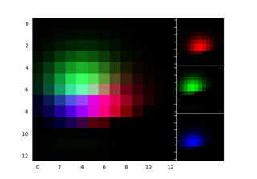

Module - axes_grid1#



Showing RGB channels using RGBAxes
Showing RGB channels using RGBAxes


Controlling the position and size of colorbars with Inset Axes
Controlling the position and size of colorbars with Inset Axes
Per-row or per-column colorbars
Per-row or per-column colorbars
Axes with a fixed physical size
Axes with a fixed physical size


Make room for ylabel using axes_grid
Make room for ylabel using axes_grid

Parasite Simple2

Simple Anchored Artists